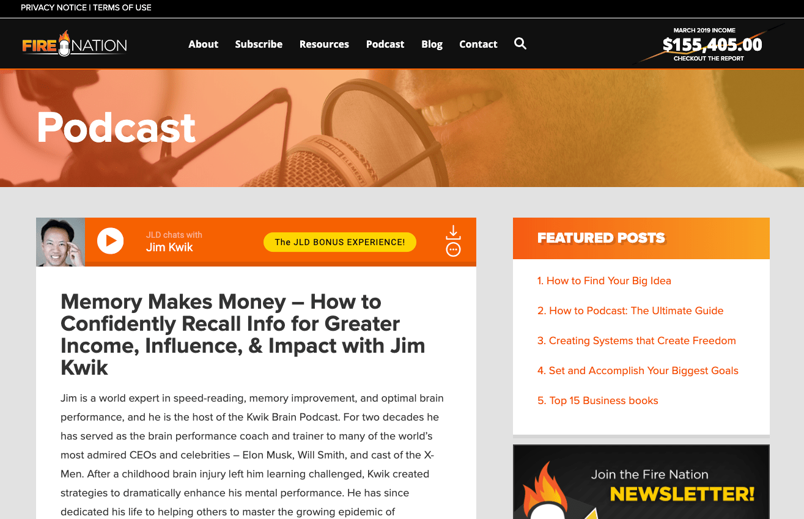
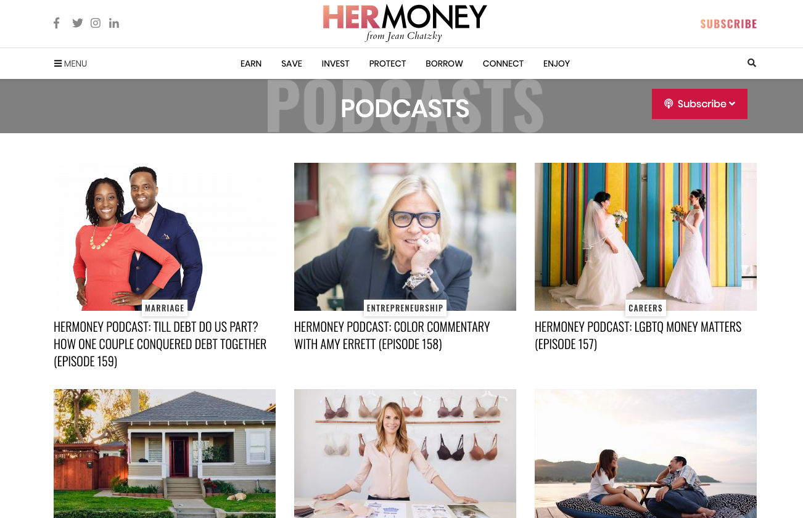
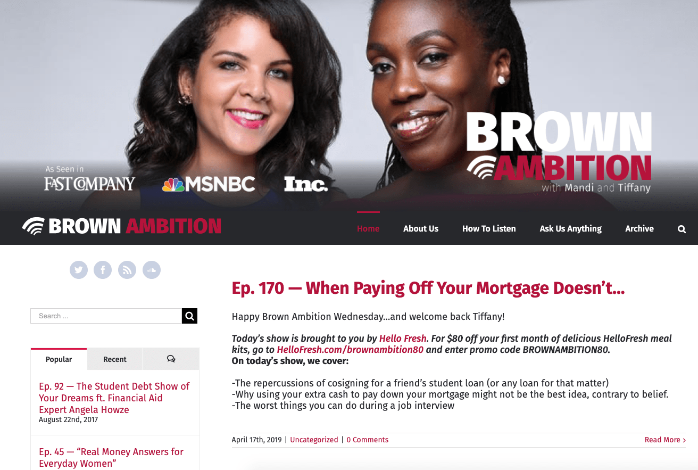
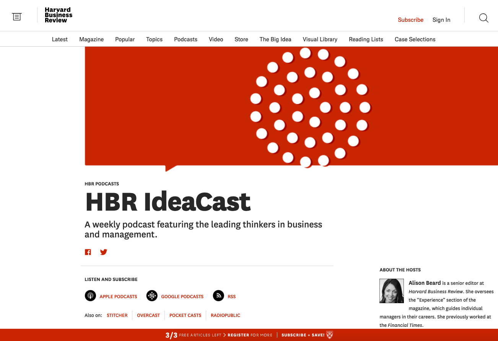
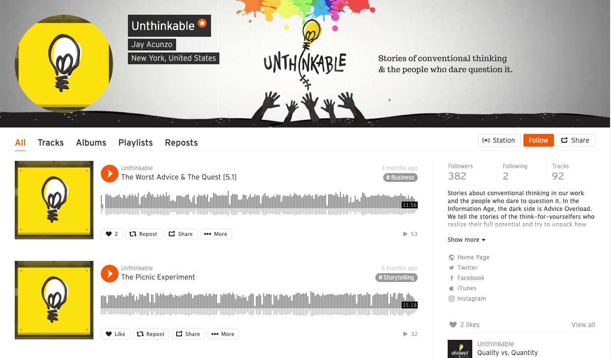
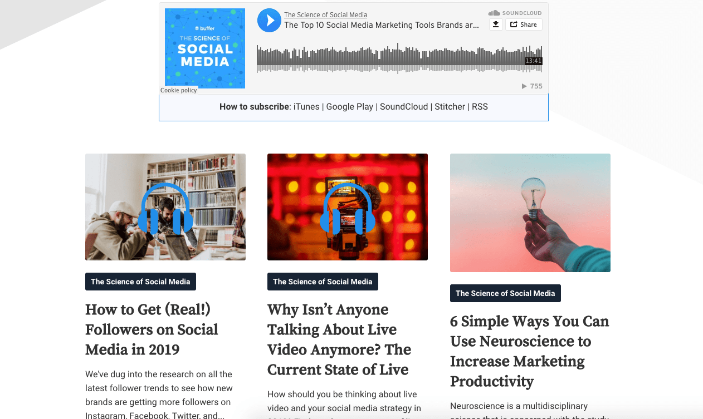
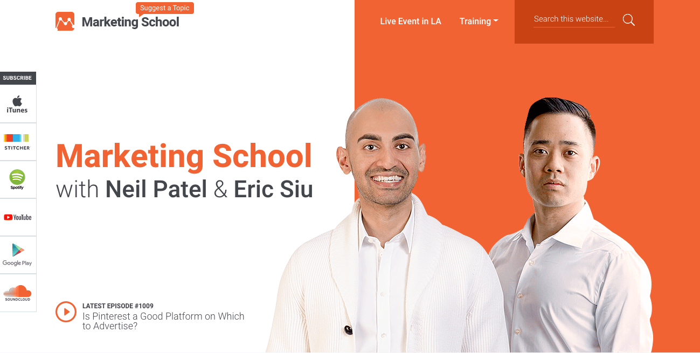
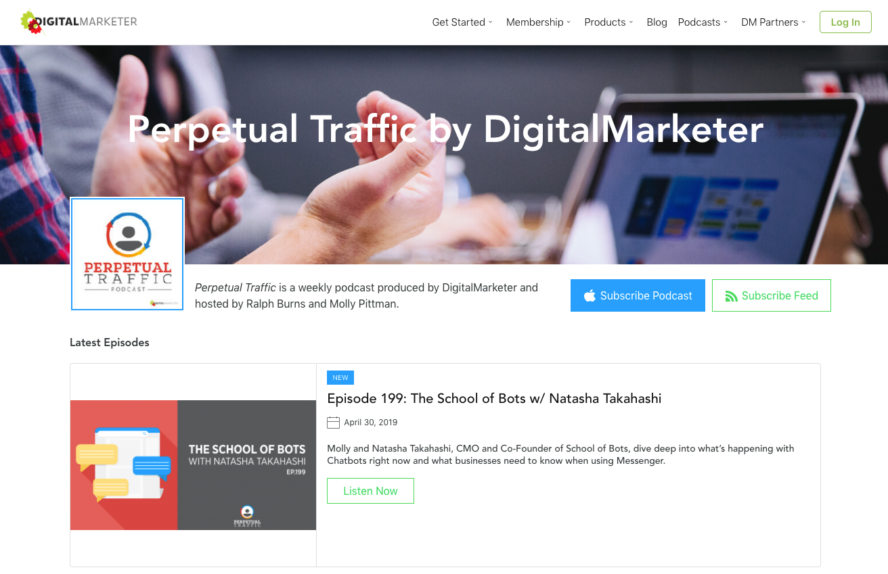

29 Must-Hear Podcasts for Business Owners
When’s the last time you listened to a truly great podcast?
Business owners like you have a lot to gain by becoming regular listeners to relevant podcasts. Not only can podcasts expose you to new ideas and help you learn new things, the best ones are also highly entertaining, and you shouldn’t be surprised if you start belly-laughing while listening to one of these.
In honor of Small Business Week, we’ve put together a mega-list of 29 podcasts that business owners can learn a lot from. To help you find podcasts you might not be familiar with, we opted against including super-popular podcasts like Planet Money, How I Built This, or The Tim Ferriss Show on this list.
Whether you’re a podcast aficionado or you’ve never gotten hooked on one before, you stand to find insightful tips that’ll help you become a more effective executive by listening to any number of the following podcasts. To make things easier, we’ve separated the list into five categories: finance, real business stories, entrepreneurs, how-to, and marketing.
Let’s jump right in.
Finance Podcasts
1. Entrepreneurs on Fire
Everything big must first be small. On Entrepreneurs on Fire, host Jon Lee Dumas interviews entrepreneurs like Tim Ferriss, Barbara Corcoran, and Gary Vaynerchuk, asking them to reveal their biggest failures before diving into their tips for success. To date, Dumas has interviewed more than 2,100 entrepreneurs. New podcasts pop up a few times a week.

2. Smart Passive Income
Passive income: It’s making money when you sleep. If that sounds like an awesome way to make a living, check out Pat Flynn’s excellent podcast, Smart Passive Income. Flynn shares his own advice on the podcast. But he also welcomes all sorts of guests—like industry pundits and successful entrepreneurs. New episodes of Smart Passive Income arrive each week; to date, Flynn has recorded more than 365 podcasts.
3. HerMoney
Navigating the world of finance is difficult because managing money is complex. Jean Chatzky, host of the HerMoney podcast, attempts to remove the complexity from the equation with a podcast that is “for women, by women, about money.” Chatzky explores money challenges that are unique to women, as well as common challenges women face in their personal and professional lives.

4. Financial Freedom
When he was in his mid-20s, Grant Sabatier has $2.26 left in his bank account. Fast-forward five years and Sabatier’s net worth grew to more than $1 million. To help other people gain financial independence, Sabatier launched a podcast in 2018 called Financial Freedom. The podcast—which includes tips on personal finance, investing, side hustling, real estate and more—has already been downloaded nearly 2 million times.
5. Stacking Benjamins
Since 2012, Stacking Benjamins has used humor to help listeners get a better grasp on their personal and business finances. Created and co-hosted by Joe Saul-Sehy, the podcast serves as a primer into many ideas related to money management and investing. Stacking Benjamins includes conversations with people who’ve made bad choices with money to help you avoid making the same mistakes.
6. Afford Anything
Wouldn’t it be nice to have the financial independence needed to be able to buy whatever you wanted to buy? Paula Pant launched her Afford Anything podcast to educate listeners on various financial topics, with the ultimate goal of achieving “FIRE”—financial independence, retire early. Pant helps listeners like you make smarter decisions about time and money to make it easier to achieve the lifestyle you hope for. New episodes are released twice a week.
Real Business Stories
7. The Startup Chat
Starting a business is hard work. Starting a successful business is even harder. Entrepreneurs Steli Efti and Hiten Shah created The Startup Chat, a podcast that explores all kinds of problems and common issues entrepreneurs face as they scale their companies. Learn about fundraising mistakes, how to work with graphic designers, how to act under pressure, and more.
8. Brown Ambition
Journalist Mandi Woodruff and financial advisor Tiffany Aliche created the Brown Ambition podcast to discuss all aspects of the business world, highlighting podcasts with stories about their own successes and failures. Tune in to learn about things like student loan forgiveness and how to manage your credit history as well as incredible stories like how Aliche saved $100,000 on taxes. New episodes drop each week.

9. HBR IdeaCast
The fine folks over at the Harvard Business Review have a podcast of their own called HBR IdeaCast, which, to date, has aired over 675 episodes. You probably have a pretty decent idea of what you can expect to hear on this podcast. Recent episode titles include “The Right Way to Get Your First 1,000 Customers”, “Why U.S. Working Moms Are So Stressed – And What To Do About It”, and “A Theoretical Physicist (and Entrepreneur) on Why Companies Stop Innovating.”

10. Outside In
Hosted by Charles Trevail, Outside In shines a light on some of the most influential companies in the world and tries to unpack their customer-centric philosophies into actionable tips businesses like yours can put into practice.
11. Business Wars
According to some, business is war. To win, you need to beat your competitors. The Business Wars podcast was created by David D. Brown to examine high-profile competitions—like Coke vs. Pepsi, Nike vs. Adidas, McDonald’s vs. Burger King and Netflix vs. HBO, among others. Business Wars takes a deep dive into each of these battles, which are usually covered over the course of several episodes.
12. The $100 MBA Show
Hosted by Omar Zenhom and Nicole Baldinu, The $100 MBA Show offers actionable tips that you can put into practice right away. Instead of droning on and on about the same topic, this podcast aims to pack a lot of punch into a short period of time—eliminating the fluff so you can focus on the choice nuggets and get back to growing your business.
13. Weird Work
Some people are doctors. Other people are bartenders. Still other people are marketing professionals. Then there are all sorts of jobs we rarely think about—like being a comic book inker, a professional hand model, or someone who repairs vintage arcade games. In case the name doesn’t give it away, the Weird Work podcast—which is hosted by HubSpot—explores the stranger jobs people have. It’s definitely worth checking out.
Podcasts for Entrepreneurs
14. Mixergy
To reach your full potential as an entrepreneur, you need to be exposed to all kinds of ideas so you can keep learning new things. Mixergy seeks to be your go-to source for all of these ideas. Hosted by Andrew Warner, the Mixergy podcast features interviews with big-time movers and shakers—like Dropbox’s Drew Houston and Reddit’s Alexis Ohanian. To date, more than 1,000 episodes of Mixergy have aired.
15. Unthinkable
Jay Acunzo believes that most B2B and business content is boring. Everyone probably agrees with that statement at least a bit. But instead of complaining about the state of content, Acunzo decided to do something about it. He created Unthinkable, an entrepreneur-focused podcast that seeks to convey the emotions we experience over the course of our careers—in an entertaining and engaging way. (Acunzo also hosts Traction, a podcast that focuses on how startups begin.)

16. Rise and Grind
Time is the great equalizer. No matter how hard-working, wealthy, or talented we are, we are all working with 24 hours every day. Daymond John, founder of FUBU and a star of Shark Tank, created a podcast called Rise and Grind to shine a light on how some of the most effective entrepreneurs, musicians, and athletes are able to seemingly cram more into an average day than the rest of us.
17. Inside LaunchStreet
How do top innovators and entrepreneurs make good decisions, increase creativity, and get more done? That’s what the Inside LaunchStreet podcast sets out to explore. Hosted by Tamara Ghandour, Inside LaunchStreet releases a new episode each week designed to provide actionable tips you can immediately apply to your everyday life. To date, more than 1,800 episodes have aired.
18. RISE Together
Husband-and-wife duo Dave and Rachel Hollis launched a podcast called RISE Together to help couples reach their full potential in their personal and professional lives. The podcast debuted in July 2018 and is published weekly—however, it appears the couple is on a bit of a hiatus at the time of this writing. Still, it’s worth checking out their library to see if there’s anything that speaks to you—particularly if you run a business with your partner.
19. Being Boss
Billed as a podcast for creative entrepreneurs, Being Boss is hosted by authors Emily Thompson and Kathleen Shannon. The podcast speaks specifically to small business owners, new or aspiring entrepreneurs, and freelancers hoping to scale their business. Topics include productivity, habits, inspiration, goal setting, and ways to get you closer to living the life of your dreams while doing what you love.
How-To Podcasts
20. The Growth Show
The Growth Show is a podcast from HubSpot that explores how, specifically, people can transform their ideas into bona fide businesses. Hosted by Meghan Keaney Anderson, HubSpot’s vice president of marketing, the podcast highlights real-world stories of how people have built their dreams.
21. The Science of Social Media
For most businesses, social media is a critical marketing and sales tool. But you can’t just expect to open up a Twitter account and get great results. Enter the team at Buffer. Their podcast—The Science of Social Media—explores tips, tricks, trends, and more that are designed to help you take your social media game to the next level.

22. The Indie Hackers
It’s one thing to say “I want to be an entrepreneur.” Turning that statement into reality—and being successful—is a different beast. Hosted by Courtland Allen, The Indie Hackers podcast features conversations with startup founders that focus on what they’re actually doing to take their businesses to the next level.
23. Hack the Entrepreneur
Interested in building an online business? Listen to Jon Nastor’s Hack the Entrepreneur podcast and learn how to develop an entrepreneurial mindset—as well as tips that’ll teach you how to succeed with your digital business. Is your idea a legit business? Or is it more of a side hustle? Listen to Hack the Entrepreneur to find out.
24. The Hustle and Flowchart
How do you drive traffic to your site? How do you raise brand awareness? How do you build repeatable processes for your business? Find out the answers to these questions and more on The Hustle & Flowchart Podcast, hosted by Matt Wolfe and Joe Fier. Episode titles include “How 80/20 Thinking Applies to Absolutely Everything in Life”, “Tactics And Formulas To Write Amazing Sales Copy” and “Outsourcing the Scaling of Your Business.”
Marketing Podcasts
25. Marketing School
Want to sharpen your marketing skills, fast? Then you need to subscribe to the Marketing School podcast, hosted by Neil Patel and Eric Siu. The podcast covers all facets of marketing—everything from how many blogs you should write each week and whether podcast advertising actually works to instances where SEO doesn’t matter and when a freemium business model might make sense. With a new short-and-sweet episode every day—and nearly 1,000 episodes to date—you won’t run out of material any time soon.

26. Copyblogger
Getting your online business to the next level requires good marketing—and lots of it. The fine folks over at Copyblogger have a great podcast that will help you become a better copywriter, a better podcaster, and a better content marketer.
27. Duct Tape Marketing
Every handyman knows how important duct tape is. The Duct Tape Marketing Podcast, hosted by John Jantsch, seeks to provide the same utility to small business owners like you. The podcast explores all kinds of business topics with a strong emphasis on marketing. Guests include big names like Simon Sinek and Dr. Robert Cialdini.
28. Marketing Over Coffee
Marketing Over Coffee, the brainchild of John J. Wall and Christopher S. Penn, examines traditional and new approaches to marketing to help entrepreneurs get a better understanding of the myriad of marketing tactics they can employ to get better business results. New episodes appear every week and each of them runs about 20 minutes long, so you don’t have to carve out huge chunks of your day to learn something new.
29. Perpetual Traffic
Wouldn’t it be great if millions of people went to your business’ website every day? That might not be possible, but the folks over at DigitalMarketer are doing their best to help you get there with a podcast called Perpetual Traffic that’s hosted by Ralph Burns and Molly Pittman. The podcast teaches listeners everything they need to know about driving traffic to their sites through services like Facebook and Instagram. New episodes are released each week. Sign up to stay on top of every development in the world of paid traffic.

While you might not need to subscribe to every single one of these podcasts, the fact that you made it this far proves that you’re interested in gaining more knowledge and becoming a more effective entrepreneur.
Did we miss one of your favorites? Feel free to Tweet at us @fundbox and tell us what else belongs on this list!
Poke around this list and test out some new podcasts. You’re certain to find at least a couple you love.
Ready for more?
Apply for funding and find out if you qualify today